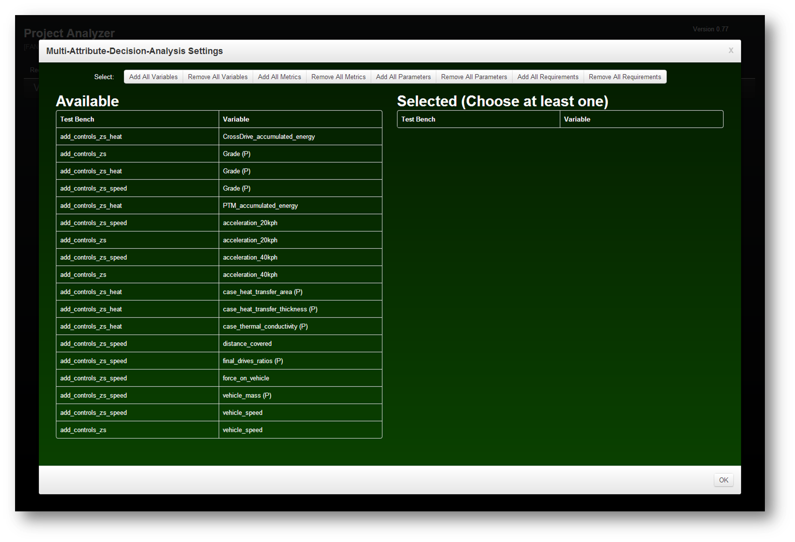
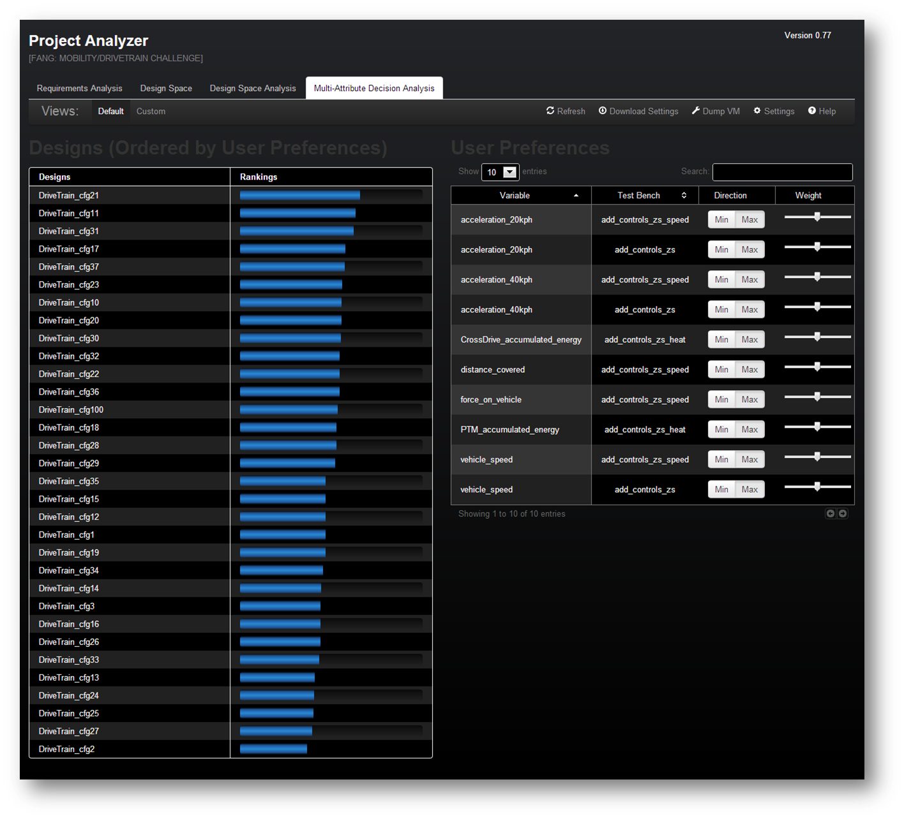

Click on a design (configuration) to set it as the current design in all the other tabs
| Test Bench | Variable |
|---|---|
| Test Bench | Variable |
|---|---|
The Multi-Attribute-Decision-Analysis tab allows a set of designs (configurations) to be quickly ranked with respect to a user defined preference. The results are based on a modified technique called TOPSIS and are completely independent of the scoring mechanism used to judge designs for the FANG competition.
If this tab is opened without a vaild set of preferences defined by the user. The settings dialog is automatically opened giving the user an opportunity to select which variables to provide preferences for. All of the available variables (or variables without preferences) are listed in the left-hand plane of the dialogue. all of the selected variables ( or variables with preferences ) are listed in the right-hand plane. Clicking on a variable within either plane will toggle the variable status as having a preference or not having a preference. The multiattribute decision analysis algorithm will ignore all variables without preferences. Each design is ranked relative to each other within the currently loaded dataset.
At the top of the dialog several shortcuts have been provided to help the user quickly select a subset of the available variables. Of course, all variables will either add or remove all of the variables. All metrics will add or remove variables which are outputs of test benches. All parameters will add or remove all variables which are inputs to test benches. Finally, all requirements will add or remove all variables which is associated with a requirement. Please note that the all requirements shortcut requires a valid requirements definition. Close the dialog box in order to finalize a selection of variables. The dialog box can always be reopened by pressing the settings button within the menu bar of the project analyzer.
The body of the multiattribute decision analysis tab is divided into a left and right plane. The left plane contains the ordered rankings of all of the designs (configurations) with respect to the user's preferences. The blue horizontal bars indicate relative closeness of a given design to the positive ideal design and the negative ideal design as defined by the TOPSIS technique. Thus, a design with a blue bar that spans its entire column is mathematically equivalent to the positive ideal design. A design with no Bovard is mathematically equivalent to the negative ideal design.
The right plane within the body of the multiattribute decision analysis tab contains all of the variables with preferences. By default, each variable with a preference is set to a preference of 50%. a preference is defined by its direction and weighting. The direction indicates whether or not a variable should be maximized or minimized. The weighting indicates the relative importance of a variable compared to all other variables with preferences.